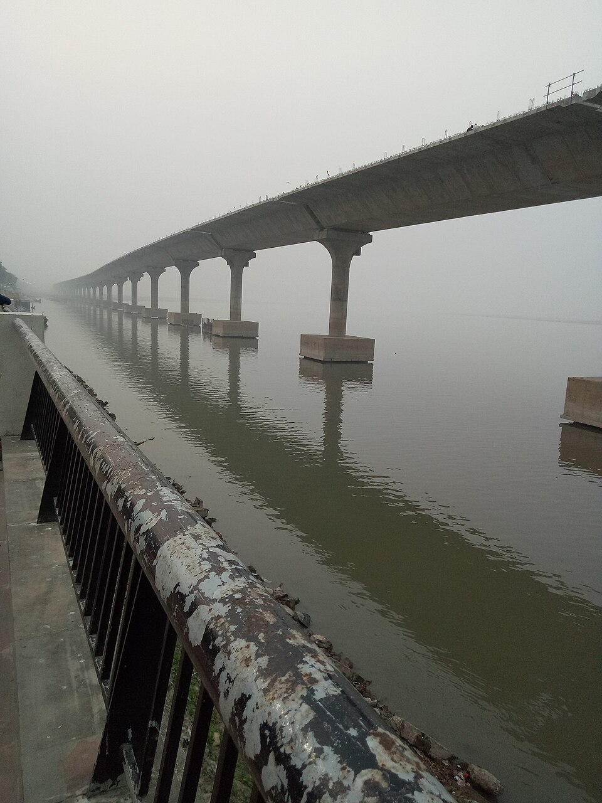

दिल्ली के अमन विहार में कार की टक्कर से स्कूली छात्र की मौत, आरोपी ड्राइवर गिरफ्तार
दिल्ली के रोहिणी स्थित अमन विहार इलाके में तेज रफ्तार कार की टक्कर से स्कूल से लौट रहे पांचवीं कक्षा के छात्र की मौत हो गई, जबकि दो अन्य बच्चे घायल हो गए। पुलिस ने आरोपी ड्राइवर को गिरफ्तार कर लिया है।
दिल्ली के रोहिणी इलाके के अमन विहार में एक तेज रफ्तार और अनियंत्रित कार ने मोटरसाइकिल को टक्कर मार दी, जिससे पांचवीं कक्षा के एक छात्र की मौत हो गई और दो अन्य बच्चे घायल हो गए। यह हादसा 18 नवंबर को उस समय हुआ जब एक पिता अपनी मोटरसाइकिल पर अपने बेटे और पड़ोस के दो बच्चों को स्कूल से घर वापस ला रहे थे। टक्कर इतनी जोरदार थी कि बाइक पर सवार सभी बच्चे सड़क पर दूर जा गिरे।
हादसे के बाद स्थानीय लोगों और पुलिस की मदद से घायलों को नजदीकी अस्पतालों में पहुंचाया गया। संजय गांधी मेमोरियल अस्पताल में डॉक्टरों ने एक बच्चे को मृत घोषित कर दिया, जबकि दो अन्य घायल बच्चों को अग्रसेन अस्पताल में भर्ती कराया गया है। रोहिणी के पुलिस उपायुक्त (DCP) शशांक जायसवाल ने बताया कि आरोपी ड्राइवर सोनू को गिरफ्तार कर लिया गया है और दुर्घटनाग्रस्त वाहन को जब्त किया गया है।
पुलिस ने आरोपी चालक के खिलाफ शराब पीकर गाड़ी चलाने, लापरवाही और गैर-इरादतन हत्या की धाराओं के तहत मामला दर्ज कर लिया है। घटना की पुष्टि के लिए आसपास लगे सीसीटीवी कैमरों की फुटेज खंगाली जा रही है, और आगे की कानूनी कार्रवाई की जा रही है।
और पढ़ें
फिल्म 'पद्मावत' की शूटिंग के दौरान रणवीर सिंह को पड़े थे 24 थप्पड़
दिग्गज अभिनेता रजा मुराद ने एक इंटरव्यू में खुलासा किया है कि फिल्म 'पद्मावत' के एक सीन को परफेक्ट बनाने के लिए रणवीर सिंह को 24 बार थप्पड़ खाने पड़े थे, जिससे उनका गाल सूज गया था।
राष्ट्रीयगोरखपुर में तेज रफ्तार ट्रक की टक्कर से हाथी की मौत, महावत घायल
उत्तर प्रदेश के गोरखपुर में एनएच-24 पर तेज रफ्तार ट्रक की टक्कर से सड़क किनारे चल रहे एक हाथी की मौके पर ही मौत हो गई, जबकि महावत और एक अन्य युवक गंभीर रूप से घायल हो गए।

राष्ट्रीयप्रधानमंत्री नरेंद्र मोदी ने बिहार में नीतीश सेतु का किया उद्घाटन
प्रधानमंत्री नरेंद्र मोदी ने बिहार के वैशाली और पटना के बीच गंगा नदी पर बने नीतीश सेतु का उद्घाटन किया है। इससे दोनों जिलों के बीच आवागमन सुगम होगा और करोड़ों रुपये की परियोजनाओं की सौगात मिलेगी।
राष्ट्रीयबिहार में कच्ची दरगाह-बिदुपुर ब्रिज के नामकरण और उद्घाटन पर सियासी घमासान
प्रधानमंत्री नरेंद्र मोदी द्वारा उद्घाटन किए जाने वाले कच्ची दरगाह-बिदुपुर 6 लेन ब्रिज का नाम 'नीतीश सेतु' रखे जाने पर बिहार में राजनीतिक विवाद शुरू हो गया है। विपक्ष ने नाम बदलने और दोबारा उद्घाटन का आरोप लगाया है।